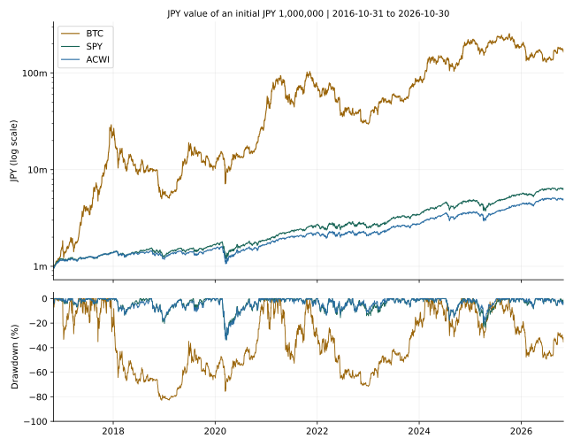

ビットコインと株式投資、長期保有ならどちらが有利？
過去10年間のリターンとリスクを比較
公開： ｜ 更新：
著者・編集：トピック基地 ｜ 調査日：2026年11月6日（日本時間）
過去に大きく上がった資産を見れば、長期保有の答えは簡単に見える。しかし、途中でどれほど下がったのか、何年待ったのか、配当や税金をどう扱ったのかで比較の意味は変わる。本記事では、BTCと、S&P500・全世界株式に連動する米国ETFを同じ約10年間・同じ観測日で比較した。
- 2016年10月31日〜2026年10月30日の円換算では、BTCの累積リターンが最も大きかった。一方、最大下落率は約83％に達した。
- 株式側は指数そのものではなく、SPY・ACWIの分配金等調整後の市場価格を使用。国内投資信託やNISA口座の実績とは異なる。
- 「この期間で増えた」と「今後も有利」は同じではない。税引前の結果と、損失に耐えられる期間を分けて読む必要がある。
銘柄の購入を推奨する記事ではありません。数値は過去データの比較計算で、将来の利益や元本を保証しません。本分析の「税引前」は投資家段階の税を引いていない意味で、ETF内部の費用や課税の影響まで消した指数ではありません。
1. ビットコインと株式投資の基本的な違い
株式は企業への持分で、企業の収益・財務状態・配当方針などが評価の材料になる。株価指数は複数の銘柄を決まったルールで集計した指標で、指数自体を直接購入することはできない。S&P500は米国の主要な大型株を対象とし、MSCI ACWIは先進国と新興国の大型・中型株を対象とする。全世界株式も国別・銘柄別の比率は均等ではなく、米国株と投資対象が重なる。［1］［2］
BTCの現物保有は企業への持分ではなく、通常の保有だけで企業利益からの配当を受け取る権利はない。価値の移転や供給ルールを持つ暗号資産であり、貸付等を加える場合は、単純保有とは別の相手方リスクが生まれる。供給の仕組みは第1号の半減期解説を参照してほしい。［3］
本記事が比べるのは、BTC現物価格と、分散された株式に連動を目指すETFの市場価格だ。個別株1銘柄のリスクを「株式全体」として扱わず、BTCを企業の株式と同一視もしない。
2. 比較条件：完全に同じ商品にはできない
対象期間は2016年10月31日〜2026年10月30日
調査日直前の、完了した月までの約10年間を採用した。両端は10暦年から1日短く、間隔は3,651暦日。3資産と為替の値がそろう2,486観測日を共通標本とした。11月途中の価格は混ぜていない。土日、休場日、為替の欠測日は補間も前日値の持ち越しもせず、主比較から除外した。
| 対象 | 入力系列 | 位置付けと限界 |
|---|---|---|
| BTC | Yahoo Finance BTC-USDの日次終値 | 提供元による米ドル価格。特定の日本の交換業者で約定できる価格ではない |
| S&P500の代替 | SPYの終値・調整後終値 | S&P500への連動を目指す米国ETF。公式指数のリターンやETF基準価額（NAV）そのものではない |
| 全世界株式の代替 | ACWIの終値・調整後終値 | MSCI ACWI Netへの連動を目指す米国ETF。小型株まで含む全世界指数や国内の「オルカン」とは別の商品 |
| 為替 | 米連邦準備制度H.10の円／米ドル | ニューヨーク正午の買い相場。同日の株価終値と完全な同時刻ではない |
指数の構成・ETFの運用対象は指数会社と運用会社の一次資料で確認し、日次計算は取得できた市場価格系列を用いた。公式のS&P500・MSCI ACWIの配当込み日次指数を同条件で直接取得した分析ではない。このため、以下のSPY・ACWI欄を「指数そのものの成績」と読み替えてはいけない。［4］［5］
配当込み・円換算・コストの扱い
株式ETFは、提供元の分配金等調整後終値の比率を、分配金再投資の近似として使う。税引後に実際に再投資できた口数を追跡する計算ではない。取得応答内のSPYの40件、ACWIの22件の分配金イベントから調整係数を別計算し、提供系列との相対差が0.0001％未満であることを確認した。比較用に、未調整終値だけの価格騰落率も掲載する。
調査日の公式表示の経費率はSPYが年0.0945％、ACWIが年0.32％で、期間中ずっと同率だったと仮定するものではない。［4］［5］ ETFの市場価格は、ファンド内の運用費用・課税・追随差などの影響を受ける。これらを無視した理論指数ではないため、現在の経費率を過去10年分にもう一度差し引いてはいない。投資家が負担する売買手数料・為替スプレッド・保管費用・税、分配金受取時の外国源泉税や端数口数の制約は別途反映していない。BTCの貸付収入・分岐コイン等も加算していない。
円換算は、各日のドル建て系列に同日の円／米ドルを掛けて行った。開始日の1ドル105.07円に対し、終了日は157.47円で、円安が円換算の成績を押し上げた。これは為替ヘッジなしの条件であり、将来の為替を予測するものではない。［6］
同じ日付でも時計はそろっていない。BTCはUTC日次区切り、ETFは米国取引日の終値、為替はニューヨーク正午の観測を使う。完全に同期した約定可能な価格の再現ではなく、日次の参考比較である。BTCの土日を除くことで下落を小さく見せる可能性もあり、別途すべての暦日データで確認した結果を後述する。
3. 約10年間のリターン・下落率・年間騰落率
主比較は同じ2,486日。SPY・ACWIは調整後系列、BTCは現物価格、いずれも投資家段階の税引前。円換算の100万円の期末額は、BTCが約1億6,505万円、SPYが約624万円、ACWIが約486万円となった。これは2016年の価格水準から始めた特定期間の事後計算であり、今から同じ成果を再現できるという試算ではない。
表は入力CSVから計算コードで生成。USD＝米ドル建て、JPY＝円換算、CAGR＝年率換算リターン、DD＝過去の高値からの下落率。スマホでは表の中を左右にスクロールできる。
累積リターン・CAGR・100万円の比較
| 対象 | 累積収益率 USD | CAGR USD | 100万円の期末額 JPY | CAGR JPY | 最大DD JPY |
|---|---|---|---|---|---|
| BTC | +10913.02% | +60.06% | 165,053,854円 | +66.67% | -82.89% |
| 米国株式ETF SPY | +316.34% | +15.34% | 6,239,695円 | +20.10% | -33.74% |
| 全世界株式ETF ACWI | +223.95% | +12.48% | 4,855,041円 | +17.12% | -33.72% |
配当を含めるかで結果は変わる
| 対象 | 開始日価格 USD | 終了日価格 USD | 価格のみ | 調整後系列 |
|---|---|---|---|---|
| BTC | 700.9720 | 77,198.2109 | +10913.02% | +10913.02% |
| 米国株式ETF SPY | 212.5500 | 755.7200 | +255.55% | +316.34% |
| 全世界株式ETF ACWI | 57.9700 | 156.0400 | +169.17% | +223.95% |
最大ドローダウンと回復までの期間
| 対象 | 最大DD USD | 最大DD JPY | 下落前の高値 | 底値 | 回復日 | 高値→回復 | 底値→回復 |
|---|---|---|---|---|---|---|---|
| BTC | -83.04% | -82.89% | 2017-12-18 | 2018-12-14 | 2020-12-16 | 1094日 | 733日 |
| 米国株式ETF SPY | -33.72% | -33.74% | 2020-02-20 | 2020-03-23 | 2020-09-01 | 194日 | 162日 |
| 全世界株式ETF ACWI | -33.53% | -33.72% | 2020-02-20 | 2020-03-16 | 2020-11-09 | 263日 | 238日 |
最長の未回復期間も別に見る
| 対象 | 最長期間の高値日 | 最長期間の回復日 | 高値からの暦日数 | 期末の直近高値からの下落 |
|---|---|---|---|---|
| BTC | 2017-12-18 | 2020-12-16 | 1094日 | -35.47% |
| 米国株式ETF SPY | 2018-10-03 | 2019-07-26 | 296日 | -3.76% |
| 全世界株式ETF ACWI | 2018-10-01 | 2019-11-04 | 399日 | -5.10% |
年間騰落率と部分期間
| 年 | 比較開始日 | 比較終了日 | BTC | SPY | ACWI |
|---|---|---|---|---|---|
| 2016（部分） | 2016-10-31 | 2016-12-30 | +52.41% | +17.58% | +14.50% |
| 2017 | 2016-12-30 | 2017-12-29 | +1371.32% | +17.44% | +19.98% |
| 2018 | 2017-12-29 | 2018-12-31 | -75.14% | -7.10% | -11.54% |
| 2019 | 2018-12-31 | 2019-12-31 | +90.40% | +29.99% | +25.40% |
| 2020 | 2019-12-31 | 2020-12-31 | +282.83% | +12.36% | +10.47% |
| 2021 | 2020-12-31 | 2021-12-30 | +81.56% | +44.04% | +32.65% |
| 2022 | 2021-12-30 | 2022-12-30 | -59.72% | -6.59% | -6.74% |
| 2023 | 2022-12-30 | 2023-12-29 | +171.10% | +34.90% | +30.73% |
| 2024 | 2023-12-29 | 2024-12-31 | +147.83% | +39.46% | +31.16% |
| 2025 | 2024-12-31 | 2025-12-31 | -6.68% | +17.29% | +21.97% |
| 2026（部分） | 2025-12-31 | 2026-10-30 | -11.41% | +12.17% | +11.47% |
2016年は10月31日から年末、2026年は前年末から10月30日までの部分期間で、通年の騰落率ではない。各年の区切りも、12月31日が欠測なら最後の共通観測日を使う。BTCの365日ベースの年間リターンや、指数会社の年次公表値とそのまま一致するものではない。丸め前の米ドル・円換算の両方の年次値は分析結果JSONに保存した。
4. 初期投資100万円の資産推移
開始日に100万円を一括投資し、追加投資・引き出し・資産間のリバランスはしない。円をドルへ交換して買い付け、ETFの分配金を同じETFへ再投資する近似を置く。これは積立投資の計算でも、NISA口座の実績でもない。

CAGRは「最初と最後が同じになる一定の年率」に置き換えた値で、毎年その利回りを得たという意味ではない。今回の円換算CAGRはBTCが66.67％、SPYが20.10％、ACWIが17.12％だが、年別表には大きなマイナスの年もある。高いCAGRだけから、安定した収益源と判断できない。
5. 最大下落率と、高値回復までの待ち時間
最大下落は「最初の100万円からの損失」ではない
最大ドローダウンは、その時点までの最も高い評価額から、最も深く落ち込んだ割合だ。円換算ではBTCが−82.89％、SPYが−33.74％、ACWIが−33.72％となった。BTCが途中で大きく上昇した後の下落であり、初日の100万円が実際に17万円になったという意味ではない。
大きさの感覚として、ある高値で評価額が100万円だったと仮定すると、82.89％の下落後は約17万円になる。そこから元の高値へ戻るには、下落率と同じ82.89％の上昇では足りない。損失の割合と必要な回復率は非対称だ。
「高値から」と「底値から」の回復期間を分ける
BTCの円換算で最大下落を起こした高値は2017年12月18日、底値は2018年12月14日、初回の回復は2020年12月16日だった。高値からは1,094暦日、底値からは733暦日となる。「数年持てば戻った」という言い方でも、購入日と生活上の支出時期が合わなければ、待てない場合がある。
最も深い下落と、最も長く高値を回復しなかった期間は同じとは限らないため、表では両方を掲載した。また、過去の最大下落から一度回復していても、期末に別の高値を下回っていることはある。今回も全3系列で期末は直近高値を下回った。過去に回復した事実は、今後の回復期限を保証しない。
観測頻度と対象期間で「最大」は変わる
BTCの全3,652暦日を使った米ドル建て最大DDは−83.40％。共通日だけの米ドル建て−83.04％より深くなった。土日や祝日の変動を落とすと結果が変わる具体例である。円換算の表と通貨まで混同しないでほしい。
ここでの最大DDは2016年以降の日次観測値の範囲内であり、日中の最悪値でも歴史全体の最悪値でもない。2008年の金融危機は期間外だ。株式側の約34％を「将来も最大でその程度の損失」と解釈してはいけない。
6. 配当・分配金とビットコインは同じではない
株式側の評価では、株価の変化だけでなく配当・分配金も重要だ。表のSPYは価格だけの累積変化が＋255.55％、分配金等調整後では＋316.34％。ACWIは＋169.17％と＋223.95％だった。価格指数と配当込み指数を混ぜると、株式側を過小評価する場合がある。
ただし、分配金は追加の「無料の利益」ではない。分配後の価格への影響があり、再投資しなければ資産の持ち方も変わる。ETFの調整後終値、公式の配当込み指数、税引後に実際に再投資した口座は、それぞれ異なる。MSCI ACWIの公式資料はNet Returnsの系列であり、今回のETF市場価格系列と同一視しない。［2］
BTCを単に保有しても株式の配当のような支払いは発生しない。利回りをうたう貸付・運用サービスを加えると、サービス提供者の信用や返還条件のリスクが加わる。本記事のBTCリターンには、その収入を含めていない。
7. 日本居住者の税金・新NISA：2026年11月6日の確認
現在の取引の扱いと、将来の改正を混ぜない
国税庁の現行案内・FAQでは、個人の暗号資産の売却等による損益は、原則として雑所得に区分される。例外的に事業に付随する場合などは別の扱いがあり、他の所得や取引内容によって税負担は異なる。日本円へ売却せず、別の暗号資産へ交換した場合や商品を購入した場合にも所得計算が必要になることがある。［7］［8］
課税口座の上場株式等の譲渡益は申告分離課税で、2026年分は所得税・住民税・復興特別所得税を合わせ原則20.315％。ただし、配当の申告方法、外国税、口座の種類などは別に確認が必要だ。［9］
NISAは対象商品の利益を非課税にする制度
2024年開始のNISAは、成人の年間投資枠がつみたて投資枠120万円・成長投資枠240万円、合計360万円。非課税保有限度額は取得額で1,800万円、うち成長投資枠は1,200万円で、非課税保有期間は無期限となる。2026年時点の成人向け制度と、2027年1月開始と案内されている未成年者向けの拡充は区別した。［12］
BTCの現物をNISA口座で直接買う制度ではない。株式指数を買うのでもなく、各枠の要件を満たし、金融機関が取り扱う商品を選ぶ。本分析のSPY・ACWIが、そのままつみたて投資枠の対象になるという意味でもない。
NISA口座の損失は課税口座の利益等と損益通算できない。外国株式等の分配には外国での課税が残る場合もあるため、「NISAならすべての税や損失がなくなる」とは考えない。2026年9月改訂の日本証券業協会のQ&Aも確認先になる。［13］
今回の2016年開始の計算を、その全期間で2024年以降のNISAを使えた実績に置き換えることはできない。税引後比較には、居住地、所得、分配時の課税、口座、売却年等の追加条件が必要になる。
8. 長期保有でも残るリスクと、投資目的別の考え方
- 近い将来使う資金：過去の平均リターンより、支出時点に大きく下がっていないかが問題になる。生活費・緊急資金を、価格回復を待つ前提にしない。
- 長期の資産形成：企業群への分散、費用、税制、積立方法を確認する。株式に分散しても市場全体の下落は残り、S&P500と全世界株式を併用しても米国株の重複がある。
- BTCへの関心：大きな損失を受け止められる資金額、保管・秘密鍵、交換業者や流動性のリスクを別途検討する。高い過去リターンだけで保有額は決められない。
- 定期収入が目的：分配の有無だけでなく、原資と税引後額、価格下落、減配も確認する。BTCの売却による取り崩しは配当ではない。
- 複数資産を持つ場合：本記事は各資産100％保有の比較であり、特定比率の混合ポートフォリオを最適化したものではない。危機時の同時下落や円高の影響も考える。
過去10年の勝者を選ぶことと、これからの生活に合う資産を選ぶことは別だ。「長期」という言葉だけで、保有中の損失や予定より早い売却の必要性はなくならない。
9. よくある質問
- Q. 結局、長期ならBTCの方が有利？
- A. 今回の特定期間ではリターンが大きかったが、最大下落も大きい。今後の優劣や回復期限は分からず、必要な資金の時期・損失許容額・税・保管まで含めて考える必要がある。
- Q. SPY・ACWIの結果は国内の投資信託でも同じ？
- A. 同じではない。連動指数、費用、分配、為替、追随差、評価時刻が異なる。今回の値は米国ETFの調整後市場価格による近似で、国内商品の販売実績や将来収益ではない。
- Q. 100万円は本当に1億円以上になる？
- A. 2016年の価格で買えたという事後計算ではそうなったが、将来の試算ではない。投資家の税・売買コスト・現実の執行条件も含んでいない。開始時点を変えれば結果は変わる。
- Q. 最大下落率は、今後の損失の上限？
- A. 違う。今回の期間と観測頻度で見つかった最悪値にすぎない。期間外の危機や日中の値動きでは、さらに大きな損失があり得る。
- Q. 年率66％なら毎年同じように増える？
- A. CAGRは両端を一定年率へ置き換えた数字だ。毎年の実績ではなく、負の年や長い未回復期間もある。
- Q. 暗号資産はもう株式と同じ税率になった？
- A. 関連法の成立、施行、税の適用年は別だ。2026年の現物売買を一律の分離課税として計算せず、取引時と申告時の公的案内を確認する必要がある。
10. まとめ：リターンだけでなく、待てる期間を見る
同じ約10年の観測では、BTCは高いリターンと大きな下落を示した。SPYとACWIも元本保証ではなく、数十％の下落や高値を取り戻すまでの待ち時間があった。円換算の好成績には円安も寄与している。
今回の結果を将来の順位に置き換えず、価格と配当、通貨、費用、税、観測期間、保管条件をそろえて読むことが重要だ。株式指数の実績を将来の投資信託の収益と同一視せず、長期であっても支出計画と損失への耐性を確認したい。
計算方法と再現手順
データ取得日は2026年11月6日。時刻と取得URL・応答ハッシュは取得記録JSON、入力は観測値CSV、出力は分析結果JSONに保存した。空欄は欠測のまま保持している。FREDのCSV取得は404で失敗したため使わず、元データ提供者である米連邦準備制度のH.10履歴を取得・解析した。
- 円換算の系列
J(t) = USD系列(t) × 円/ドル(t) - 100万円の資産額
V(t) = 1,000,000 × J(t) / J(開始日) - 累積リターン
終値 / 開始値 − 1 - CAGR
(終了値 / 開始値)^(365.2425 / 暦日数) − 1。営業日数から10年と決め打ちしない。 - DD
当日値 / それまでの最高値 − 1。最も負の値を最大DDとする。 - 回復日は、その下落前の高値以上に戻った最初の観測日。高値→回復、底値→回復の両方を暦日で計算し、未回復なら日付を作らない。
- 年別値は前年の最終共通観測日から当年の最終共通観測日。最初の年は分析開始日、最後の年は分析終了日を使用。
リポジトリには計算コード・固定入力・テストを保存した。同じスナップショットから、ネット接続なしで再計算できる。市場データは後日修正される可能性があるため、再取得と保存済みデータの再計算は区別している。再現手順と制約も参照してほしい。
金融データの最終監査
公開前の再確認では、取得時の原応答のハッシュ、CSVへ変換した16,205個の値、共通観測日を照合した。分析コードとは別に50桁精度で計算し、期末資産額・CAGR・最大下落率・回復日が一致した。原応答ではSPY・ACWIの株式分割イベントは0件で、分配金から全日次の調整係数も検証できた。監査結果一覧と監査JSONを保存している。
再取得との区別：同じURL・期間でも、再取得したETFの調整後終値には最大で相対0.0001％未満の差があった。BTC・ETFの通常終値・為替は一致した。再取得値で計算した期末額はSPYで約0.52円、ACWIで約1.92円上がったが、CAGR・DDの小数点以下2桁表示は変わらない。差が生じた理由は未確認であり、推測で補っていない。表は元の固定入力を維持しており、円単位表示はその入力に対する計算上の丸めである。
再投資方法との区別：配信された現金分配を「権利落ち日の終値で税引前再投資」と仮定する別計算に対し、調整後終値方式の期末額はSPYで約0.0671％、ACWIで約0.0399％低かった。この別方式も実際の分配金支払日や投資家の源泉税を再現するものではない。今回は提供元の調整後価格を使う方法を維持し、実際の再投資口数・税引後収益とは同一でないことを明記した。
参考資料・出典
すべて2026年11月6日調査。指数・商品・制度の説明は一次情報を優先。数値分析の市場価格はYahoo Finance提供系列、為替はFederal Reserve H.10。比較表・グラフ・計算結果はトピック基地の独自計算。株価指数会社の公式運用成績として掲載したものではない。
- S&P Dow Jones Indices — S&P 500：対象市場・指数の概要。
- MSCI — ACWI Index (USD), Net Returns（PDF）：全世界株式の対象と指数の定義。日次計算の入力には使用していない。
- Bitcoin.org — FAQ：BTCの基本・リスク。
- State Street — SPY：ETFの運用目標、費用と投資リスク。
- iShares — MSCI ACWI ETF：対象指数、分配、費用。
- Federal Reserve — H.10 Historical Rates for the Japanese Yen：円／米ドル日次履歴。観測時刻の説明はFRED DEXJPUSの系列注記も確認した。
- 国税庁 — No.1524 暗号資産を使用することにより利益が生じた場合の課税関係。
- 国税庁 — 暗号資産等に関する税務上の取扱いについて（FAQ、令和7年12月改訂、PDF）：所得区分、交換・使用、損失等。
- 国税庁 — No.1463 株式等を譲渡したときの課税。
- 金融庁 — 第221回国会における金融庁関連法律：成立日を確認。法律・理由PDFの施行期日も参照した。
- 金融庁 — アクセスFSA第270号、税制改正の大綱の概要：暗号資産分離課税の条件付きの説明。将来の適用開始を確認するための資料で、2026年の一律適用の根拠にはしていない。
- 金融庁 — NISAを知る：投資枠・保有期間・制度の時期。
- 日本証券業協会 — 2024年以降のNISAに関するQ&A（2026年9月、PDF）：外国税・損益通算・取扱商品の注意点。
- Yahoo Financeの取得API（JSON）：BTC-USD、SPY、ACWI。取得範囲は本文の期間で固定し、採用した値をCSVへ保存。